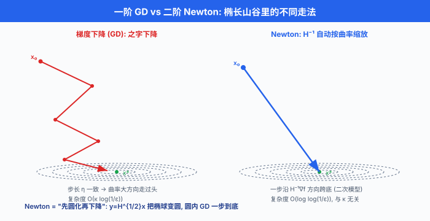
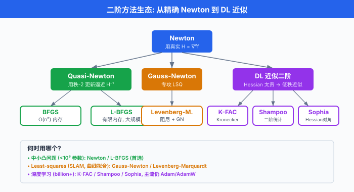

二阶方法¶
一句话总结：二阶方法把损失函数的曲率也算进来 —— 用 Hessian 把椭球局部圆化，Newton 一步跨到底；参数一多 Hessian 存不下，于是 BFGS/L-BFGS/K-FAC/Shampoo 各显神通做近似.
一阶方法看得见坡度，二阶方法看得见山型。 站在一个椭长的山谷里，梯度只告诉你"最陡是哪个方向"，却不告诉你"沿这个方向该跨多大一步" —— 它对短轴敏感，对长轴迟钝，于是来回震荡。 而牛顿法 (Newton's method) 拿到 Hessian 后，先把椭球在这一点的局部形状圆化，再沿"圆化后的最陡方向"跨出去 —— 那一步几乎精确落在谷底。 这就是二阶方法的魔力。 代价也很直白：Hessian 是 \(n \times n\) 的怪物，存不下、求逆更慢。 于是有了信赖域 (trust region) 限制步长、拟牛顿 (quasi-Newton) 用梯度差分估 Hessian、L-BFGS 只存最近几步的历史、Gauss-Newton 与 Levenberg-Marquardt 专门吃 least-squares 结构、Kronecker-factored Approximate Curvature (K-FAC) 用 Kronecker 分解把 DL 里几十亿参数的曲率硬压成两个小矩阵的乘积。 这一节我们把这条从"教科书牛顿"到"现代 DL 优化器"的完整链路走一遍.
- 上一节我们看到，一阶方法用一阶泰勒展开——沿负梯度走小步。 它简单、便宜、几乎不占内存，但盯着坡度不看曲率，所以在病态问题 (条件数大) 上举步维艰。
- 二阶方法用二阶泰勒展开——多一项 Hessian，收敛快到令人上瘾 (局部二次收敛：每一步误差取平方)，但存储与求逆代价陡然升高。
- 现代大模型训练 (billions of params) 让完整 Hessian 彻底不可行，于是 K-FAC / Shampoo / Sophia 用结构化近似把二阶信息重新塞回 DL —— 这是 2018 以后的一条重要战线。
一阶 vs 二阶：直觉图解¶
-
一阶 gradient descent (GD): $\(x_{k+1} = x_k - \eta \, \nabla f(x_k)\)$
-
二阶 Newton: $\(x_{k+1} = x_k - [\nabla^2 f(x_k)]^{-1} \, \nabla f(x_k)\)$
-
差别就在中间那把"矩阵尺子" \([\nabla^2 f]^{-1}\). GD 用同一个标量 \(\eta\) 缩放梯度所有方向 —— 若不同方向的曲率相差 \(10^3\) 倍，就必须选一个折中步长，结果沿曲率大的方向走小步、沿曲率小的方向走大步都不合适。 Newton 则用 Hessian 的逆分别为每个方向选步长：曲率大的方向 (峭壁) 步子小，曲率小的方向 (缓坡) 步子大。
-
椭球圆化直觉：二次函数 \(f(x) = \frac{1}{2} x^\top H x\) 的等高面是椭球。 做变量替换 \(y = H^{1/2} x\)，椭球变成圆 —— 在这个圆化坐标里，梯度下降一步就到底 (因为圆内所有半径方向都对称). 而 \(y\) 空间的一步梯度对应 \(x\) 空间的 Newton 步。 所以 Newton = "先圆化再下降"; GD 在原椭球坐标里绕之字。
-
条件数视角：定义 \(H\) 的条件数 (condition number) \(\kappa = \lambda_{\max}(H) / \lambda_{\min}(H)\). GD 的迭代复杂度是 \(O(\kappa \log(1/\epsilon))\) —— 条件数越差，走得越慢，病态问题 (\(\kappa = 10^6\)) 直接跪。 Newton 的复杂度与 \(\kappa\) 无关 —— 因为 \(H^{-1}\) 抵消了曲率差异。 这是二阶方法能在病态问题上碾压一阶的根本原因。

牛顿法完整推导¶
- 在当前点 \(x_k\) 附近做二次逼近:
- 把这个二次模型 \(m_k(p)\) 对 \(p\) 求极小，令 \(\nabla_p m_k = 0\):
- 于是 Newton 更新:
-
局部二次收敛 (quadratic convergence)：若 \(H(x^*)\) 正定且 Lipschitz 连续，存在邻域 \(B\) 使得从 \(B\) 出发的 Newton 迭代满足 $\(\|x_{k+1} - x^*\| \le C \|x_k - x^*\|^2\)$ 即每一步误差平方式缩小。 精度从 \(10^{-2}\) 到 \(10^{-16}\) 只需要约 4-5 步。 一阶 GD 的线性收敛 \(\|x_{k+1} - x^*\| \le \rho \|x_k - x^*\|\) 要几百上千步，差距惊人。
-
缺点很硬:
- Hessian 存储 \(O(n^2)\): \(n = 10^6\) 就要 \(8 \times 10^{12}\) Byte \(= 8\) TB. 对 DL 参数量彻底不可行。
- Hessian 求逆 \(O(n^3)\)：即使用共轭梯度求 \(H p = g\)，每步也要 \(O(n^2)\) 乘法 (若 Hessian 是稠密的).
-
Hessian 未必正定：远离最优点时 \(H\) 可能有负特征值，Newton 步可能不下降！甚至跨到鞍点或发散。 这就要求信赖域或阻尼 Newton (damped Newton) —— 加线搜索保安全。
-
修正策略：遇到 \(H\) 非正定，常用 修正 Cholesky (modified Cholesky) 加一个最小对角修正 \(\tau I\) 让 \(H + \tau I \succ 0\)；或者用 \(|H|\) (取特征值的绝对值) 代 \(H\) —— 这在鞍点附近很关键 (deep learning 里的鞍点问题，Dauphin et al. 2014 就是靠这个思路提出 saddle-free Newton).
信赖域方法¶
- 信赖域 (trust region) 承认 "二次模型只在小邻域内可信". 于是每步在半径 \(\Delta_k\) 的球内极小化模型:
- 半径自适应策略：定义"实际下降 / 模型预测下降"的比值 $\(\rho_k = \frac{f(x_k) - f(x_k + p_k)}{m_k(0) - m_k(p_k)}\)$
- \(\rho_k > 0.75\) 且 \(\|p_k\| = \Delta_k\)：模型很准，扩大 \(\Delta_{k+1} = 2 \Delta_k\).
- \(\rho_k \in [0.25, 0.75]\)：保持 \(\Delta_{k+1} = \Delta_k\).
- \(\rho_k < 0.25\)：模型不准，收缩 \(\Delta_{k+1} = \Delta_k / 4\).
-
\(\rho_k < 0\) (根本没下降)：拒绝这一步，\(x_{k+1} = x_k\)，继续收缩。
-
子问题的求解：带球约束的二次规划有闭式 KKT 条件 (Moré-Sorensen 1983)，但更实用的是 Steihaug-CG —— 从 0 出发跑共轭梯度求 \(H_k p = -\nabla f\)，一旦步长超出球边界就沿最新方向找与球交点停下。 这样每步只用 Hessian-vector product (HVP), 不需要显式存 Hessian.
-
信赖域在非凸问题上格外可靠，是 SciPy
trust-ncg/trust-krylov的实现基础。
拟牛顿法：用梯度差分估计 Hessian¶
-
存不下 \(n \times n\) 的 Hessian? 那就不显式算它，用连续两步梯度的差分估出来。 这就是拟牛顿 (quasi-Newton) 家族的核心思想。
-
定义步差 \(s_k = x_{k+1} - x_k\)，梯度差 \(y_k = \nabla f(x_{k+1}) - \nabla f(x_k)\). 由 Taylor: $\(\nabla f(x_{k+1}) \approx \nabla f(x_k) + H_k s_k \implies y_k \approx H_k s_k\)$
-
我们希望近似 Hessian \(B_{k+1}\) 满足 secant equation (割线方程):
- 这是 \(n\) 个方程，而 \(B_{k+1}\) 有 \(n(n+1)/2\) 个自由参数，严重欠定。 于是选低秩修正: \(B_{k+1} = B_k + (\text{rank-1 或 rank-2 项})\)，让 \(B\) 尽量接近 \(B_k\) 同时满足割线方程。
BFGS 更新公式¶
- BFGS (Broyden-Fletcher-Goldfarb-Shanno) 用 rank-2 更新:
- 逐项拆解:
- 第一项 \(\frac{y_k y_k^\top}{y_k^\top s_k}\): rank-1 项，让新的 \(B\) 满足割线方程. 直接验证 \(B_{k+1} s_k = B_k s_k + y_k \frac{y_k^\top s_k}{y_k^\top s_k} - B_k s_k \frac{s_k^\top B_k s_k}{s_k^\top B_k s_k} = y_k\). 完美对上。
- 第二项 \(-\frac{B_k s_k s_k^\top B_k}{s_k^\top B_k s_k}\)：减掉 \(B_k\) 在 \(s_k\) 方向的"旧"贡献 —— 因为割线方程已经指定这个方向的行为。
-
正定性：若 \(y_k^\top s_k > 0\) (曲率条件，严格凸下自动满足，一般用 Wolfe 线搜索保证)，则 \(B_{k+1}\) 也正定。
-
我们实际需要的是 \(H_k^{-1}\) 而不是 \(H_k\) 本身。 BFGS 的天赋在于，它可以直接维护逆 \(M_k = B_k^{-1}\) 的更新公式 (Sherman-Morrison 一路推出):
- 每步只需 两次矩阵-向量乘, \(O(n^2)\). 相比完整 Newton 的 \(O(n^3)\) 求逆，大幅便宜；但仍存 \(O(n^2)\) 矩阵，\(n = 10^5\) 就吃不消。
L-BFGS：只记最近 m 组历史¶
-
L-BFGS (Limited-memory BFGS) (Liu & Nocedal, 1989) 干脆不存 \(M_k\)，只保留最近 \(m\) 组 \((s_i, y_i)\) (典型 \(m = 5 \sim 20\)). 内存降到 \(O(mn)\)，对 \(n = 10^7\) 也只要百兆量级。
-
计算 \(M_k \nabla f_k\) 用著名的 two-loop recursion (双循环递归):
输入: g = ∇f(x_k), 历史 {(s_i, y_i, ρ_i = 1/(y_i^T s_i))}, i = k-1, ..., k-m
q = g
# 第一遍循环 (逆序):
for i = k-1, k-2, ..., k-m:
α_i = ρ_i * s_i^T q
q = q - α_i * y_i
r = H_0 * q # H_0 常取 γ_k I, γ_k = (s_{k-1}^T y_{k-1}) / (y_{k-1}^T y_{k-1})
# 第二遍循环 (顺序):
for i = k-m, ..., k-1:
β = ρ_i * y_i^T r
r = r + (α_i - β) * s_i
return r # ≈ M_k g
-
每步 \(O(mn)\) 计算 —— 对 \(m = 10\), \(n = 10^7\)，一步只要 \(10^8\) 次浮点运算，比完整 Newton 便宜 5 个量级。 L-BFGS 是中等规模凸优化的事实标准: SciPy 提供
method='L-BFGS-B', TensorFlow Probability 提供tfp.optimizer.bfgs_minimize; MATLABfminunc中型问题默认用 quasi-Newton (BFGS), L-BFGS 是常见替代。 -
L-BFGS-B 中的 B：加一层 box 约束 \(l \le x \le u\)，用 active-set 策略处理边界坐标，是有约束优化的常见选择。
-
收敛速率: L-BFGS 在强凸目标上是超线性收敛 (superlinear) —— 比线性收敛快，但达不到完整 Newton 的二次。 直觉：随着历史信息累积，\(M_k\) 越接近真 \(H^{-1}\)，收敛率不断改善。
从零手写 Newton for logistic regression¶
- 用一个真实小任务把 Newton 端到端写一遍。 逻辑回归的负对数似然 $\(f(w) = \sum_{i=1}^n \Bigl[ -y_i (x_i^\top w) + \log(1 + e^{x_i^\top w}) \Bigr]\)$ 是严格凸 + 二阶可导, Hessian 有干净的解析式: $\(\nabla f(w) = X^\top (\sigma(Xw) - y), \quad \nabla^2 f(w) = X^\top D X, \quad D = \mathrm{diag}(\sigma_i (1 - \sigma_i))\)$ 其中 \(\sigma(z) = 1/(1+e^{-z})\), \(\sigma_i = \sigma(x_i^\top w)\).
import numpy as np
from sklearn.datasets import make_classification
# ---- 生成数据 ----
X, y = make_classification(n_samples=500, n_features=20, random_state=0)
n, d = X.shape
X = np.hstack([X, np.ones((n, 1))]) # 加偏置列
w = np.zeros(d + 1)
def sigmoid(z):
return 1 / (1 + np.exp(-z))
def loss(w):
z = X @ w
# 用 log-sum-exp 稳态形式: log(1+e^z) = softplus
return np.sum(np.logaddexp(0, z) - y * z)
def grad(w):
return X.T @ (sigmoid(X @ w) - y)
def hess(w):
p = sigmoid(X @ w)
D = p * (1 - p) # 对角 (n,)
return (X * D[:, None]).T @ X # (d+1, d+1)
# ---- Newton 迭代 ----
print(f"{'iter':>4} | {'loss':>10} | {'||grad||':>10}")
for k in range(15):
g = grad(w)
H = hess(w)
p = np.linalg.solve(H + 1e-8 * np.eye(d + 1), g) # 阻尼保证数值稳定
w = w - p
print(f"{k:>4} | {loss(w):>10.6f} | {np.linalg.norm(g):>10.2e}")
-
你会看到 loss 在 5-6 步内收敛到机器精度，\(\|\nabla f\|\) 每步近似平方式下降 —— 这就是二次收敛的实证。 对比 SGD 跑 100 步都未必到这个精度。
-
注意 IRLS 联系：上面的 Newton 步 \(p = (X^\top D X)^{-1} X^\top (\sigma(Xw) - y)\) 展开就是每步做加权最小二乘 (Weighted Least Squares, WLS). 这就是迭代重加权最小二乘 (Iteratively Reweighted Least Squares, IRLS)，广义线性模型 (GLM) 家族的标准求解器。
sklearn.linear_model.LogisticRegression(solver='newton-cg')底层就是这套。 换言之：逻辑回归、泊松回归、Gamma 回归的经典训练算法，都是 Newton 的直接产物。
IRLS 三步推导：L1 与 Huber 的权重矩阵¶
-
上面逻辑回归的 IRLS 是你最熟悉的例子 —— 但 IRLS 远不止 GLM. 对任意光滑损失 \(\sum_i \rho(r_i)\)，只要把最优化条件改写一下就得到加权最小二乘。 这里走一遍三步推导，以 L1 和 Huber 做示范。
-
Step 1：把梯度条件伪装成加权最小二乘的正规方程
-
对残差 \(r_i(x)\) 和损失函数 \(\rho(r)\)，目标 \(f(x) = \sum_{i=1}^n \rho(r_i(x))\) 的梯度: $\(\nabla f(x) = \sum_{i=1}^n \rho'(r_i) \cdot \nabla r_i(x)\)$
-
关键技巧：定义权重函数 \(w(r) = \rho'(r) / r\) (当 \(r \neq 0\)). 于是 \(\rho'(r_i) = w(r_i) \cdot r_i\)，代入梯度: $\(\nabla f(x) = \sum_{i=1}^n w(r_i) \cdot r_i \cdot \nabla r_i(x)\)$
-
这恰好是加权最小二乘目标 \(\frac{1}{2} \sum_i w_i r_i^2\) 的梯度！也就是说，若权重 \(w_i\) 固定，寻找 \(\nabla f(x) = 0\) 等价于解加权最小二乘: $\(x^* = \arg\min_x \frac{1}{2} \sum_{i=1}^n w_i \, r_i(x)^2\)$
-
对线性模型 \(r_i = a_i^\top x - b_i\)，这就是正规方程 \(A^\top W A x = A^\top W b\)，其中 \(W = \mathrm{diag}(w_1, \dots, w_n)\).
-
Step 2：代入 L1 和 Huber 的具体权重函数
-
L1 损失 \(\rho(r) = |r|\):
- \(\rho'(r) = \mathrm{sign}(r)\)
- \(w(r) = \frac{\mathrm{sign}(r)}{r} = \frac{1}{|r|}\) (对 \(r \neq 0\))
- 注意：\(r = 0\) 时权重爆炸，实际加一个小常数做 regularized IRLS: \(w(r) = 1 / \sqrt{r^2 + \epsilon}\).
- 直觉：残差大的点权重小 (可能是离群点)，残差小的点权重大 —— 自动"忽略离群点"正是 L1 比 L2 更鲁棒 (robust) 的根源。
-
Huber 损失 (阈值 \(\delta > 0\)): $\(\rho(r) = \begin{cases} \frac{1}{2} r^2, & |r| \le \delta \\ \delta |r| - \frac{1}{2} \delta^2, & |r| > \delta \end{cases}\)$
- 导数：$$ \rho'(r) = \begin{cases} r, & |r| \le \delta \ \delta \cdot \mathrm{sign}(r), & |r| > \delta \end{cases} $$
- 权重：$$ w(r) = \begin{cases} 1, & |r| \le \delta \ \delta / |r|, & |r| > \delta \end{cases} $$
- 直觉：小残差照常 L2 (权重 1)，大残差降权 (像 L1 那样压离群点的影响). 这就是 Huber 把 L2 的光滑与 L1 的鲁棒缝合在一起的方式。
-
Step 3: IRLS 迭代 —— 权重和参数交替更新
-
权重 \(w_i\) 依赖残差 \(r_i\)，残差又依赖参数 \(x\) —— 鸡生蛋蛋生鸡。 那就交替迭代: $$ \begin{aligned} & \text{给定 } x^{(k)}, \text{ 计算残差 } r_i^{(k)} = r_i(x^{(k)}) \ & \text{算权重 } w_i^{(k)} = w(r_i^{(k)}) \ & \text{解加权最小二乘: } x^{(k+1)} = \arg\min_x \frac{1}{2} \sum_i w_i^{(k)} r_i(x)^2 \end{aligned} $$
-
对线性模型 \(r = Ax - b\)，第三步是闭式: $\(x^{(k+1)} = (A^\top W^{(k)} A)^{-1} A^\top W^{(k)} b, \quad W^{(k)} = \mathrm{diag}(w_1^{(k)}, \dots, w_n^{(k)})\)$
-
与 Newton 的联系：若把 \(\rho\) 的 Hessian 写成 \(\nabla^2 f = A^\top W A + \sum_i \rho''(r_i) \nabla r_i \nabla r_i^\top\), IRLS 只保留第一项 \(A^\top W A\)，等价于忽略 Hessian 中 \(\rho''\) 项的近似 Newton. 当 \(\rho\) 接近二次 (如 Huber 在小残差区域 \(\rho'' = 1\))，这个近似很准；对 L1 (\(\rho'' = 0\) a.e.) 则完全等价。
-
收敛性：只要 \(\rho\) 是凸函数，每步 IRLS 的目标值单调下降 (Green 1984). 对 L1，收敛到唯一解 (若 \(A\) 列满秩)；对 Huber，收敛到凸优化的全局最优。
-
代码示例 —— IRLS 求解 L1 回归:
import numpy as np
def irls_l1(A, b, eps=1e-6, max_iter=200):
"""IRLS for L1 regression: min_x ||Ax - b||_1"""
n, d = A.shape
x = np.linalg.lstsq(A, b, rcond=None)[0] # L2 解作初值
for k in range(max_iter):
r = A @ x - b
w = 1.0 / np.sqrt(r**2 + 1e-6) # 正则化权重
W = np.diag(w)
x_new = np.linalg.solve(A.T @ W @ A + 1e-10 * np.eye(d), A.T @ W @ b)
if np.linalg.norm(x_new - x) < eps:
break
x = x_new
return x
# 测试: 10% 离群点
np.random.seed(0)
A = np.random.randn(100, 5)
x_true = np.array([1.5, -2.0, 0.5, 3.0, -1.0])
b = A @ x_true + 0.1 * np.random.randn(100)
b[np.random.choice(100, 10)] += 50 * np.random.randn(10) # 离群点
x_l1 = irls_l1(A, b)
x_l2 = np.linalg.lstsq(A, b, rcond=None)[0]
print(f"L1 解: {x_l1.round(4)}")
print(f"L2 解: {x_l2.round(4)}")
print(f"真值 : {x_true}")
-
这段代码清晰地展示了 IRLS 的核心结构：每次迭代就是用一个对角权重矩阵重新加权，然后解一个线性方程组. 计算量 \(O(n d^2)\) 每步，对 \(d \ll n\) 的问题非常高效。
-
关键文献: IRLS 的系统框架来自 Green (1984) "Iteratively Reweighted Least Squares for Maximum Likelihood Estimation", JRSS B；鲁棒回归的权重视角详见 Holland & Welsch (1977) "Robust Regression Using Iteratively Reweighted Least-Squares"; L1 的 IRLS 收敛性分析见 Daubechies, DeVore, Fornasier & Gunturk (2010) "Iteratively Reweighted Least Squares Minimization for Sparse Recovery".
Gauss-Newton 与 Levenberg-Marquardt¶
-
当目标是 least-squares 形式 \(f(x) = \frac{1}{2} \|r(x)\|^2 = \frac{1}{2} \sum_i r_i(x)^2\) (回归、SLAM、光束平差), Hessian 有特殊结构: $\(\nabla f = J^\top r, \quad \nabla^2 f = J^\top J + \sum_i r_i \nabla^2 r_i\)$ 其中 \(J\) 是残差 \(r\) 关于 \(x\) 的 Jacobian.
-
Gauss-Newton (GN) 忽略第二项 (对小残差问题它接近 0): $\(H \approx J^\top J, \quad p_{GN} = -(J^\top J)^{-1} J^\top r\)$ 这本质是每步解一个线性最小二乘 \(\min_p \|J p + r\|^2\)，用 QR 或 SVD 求解，数值稳定。
-
GN 的问题: \(J^\top J\) 可能奇异或病态，尤其在初值远、rank-deficient 时步长爆炸。
-
Levenberg-Marquardt (LM) (Levenberg 1944; Marquardt 1963) 加正则化 \(\lambda I\): $\(\boxed{p_{LM} = -(J^\top J + \lambda I)^{-1} J^\top r}\)$
- \(\lambda \to 0\)：回到 GN，快 (二次收敛).
- \(\lambda \to \infty\)：步长变小，\(p \approx -\frac{1}{\lambda} J^\top r\)，就是 gradient descent.
-
LM 的 \(\lambda\) 用信赖域策略自适应：步不下降就升 \(\lambda\)，下降就降 \(\lambda\).
-
应用: 3D 重建 / bundle adjustment / SLAM (Ceres solver, g2o) / PnP / camera calibration / 神经渲染的 pose refinement，全用 LM.
scipy.optimize.least_squares(method='lm')是标准接口。 -
收敛性：对小残差问题 (\(r(x^*) \approx 0\)), GN/LM 都是局部二次收敛，与完整 Newton 一样快；对大残差问题，忽略的二阶项非零，只能保证线性收敛 —— 这时 LM 的 \(\lambda I\) 拉回 GD 反而更稳。
-
代码示例:
from scipy.optimize import least_squares
import numpy as np
# 拟合 y = a * exp(-b * x) 到含噪声数据
np.random.seed(0)
x_data = np.linspace(0, 4, 50)
y_data = 2.5 * np.exp(-1.3 * x_data) + 0.05 * np.random.randn(50)
def residual(params, x, y):
a, b = params
return a * np.exp(-b * x) - y
# LM 求解
result = least_squares(residual, x0=[1.0, 1.0], args=(x_data, y_data), method='lm')
print(f"拟合参数: a = {result.x[0]:.4f}, b = {result.x[1]:.4f}")
print(f"残差平方和: {0.5 * np.sum(result.fun**2):.6f}")
print(f"迭代次数: {result.nfev}")
二阶方法在深度学习中的应用¶
- 完整 Newton 在 DL 里彻底没戏 —— GPT-3 有 175 B 参数，Hessian 就是 \((1.75 \times 10^{11})^2 \approx 3 \times 10^{22}\) 元素，用 float64 存需 \(\approx 2.5 \times 10^{23}\) Byte \(= 2.5 \times 10^{11}\) TB. 只能近似.
为什么全 Hessian 不可行¶
- 存储 \(O(n^2)\)：大模型 \(n = 10^9 \sim 10^{12}\), Hessian \(10^{18} \sim 10^{24}\) 元素。
- 求逆 \(O(n^3)\)：天文数字。
-
就算能存能算，Hessian 在 mini-batch 上噪声极大，二次模型信任度低。
-
现代 DL 二阶优化器的路线是：要么低秩近似 (K-FAC/Shampoo)，要么只算对角 (Sophia/AdaHessian)，要么只算 HVP (Hessian-free/Krylov).
K-FAC (Martens & Grosse, 2015)¶
-
Kronecker-factored Approximate Curvature (K-FAC) 是 DL 二阶方法的里程碑。 关键洞察：一层 FC 的 Fisher 矩阵 (natural gradient 需要) 可以近似分解成两个小矩阵的 Kronecker 积.
-
设一层的输入激活 \(a \in \mathbb{R}^{d_{in}}\)，输出梯度 \(g \in \mathbb{R}^{d_{out}}\). 该层权重 \(W \in \mathbb{R}^{d_{out} \times d_{in}}\) 的 Fisher 元素涉及 \(\mathbb{E}[a a^\top \otimes g g^\top]\). K-FAC 近似为 \(\mathbb{E}[a a^\top] \otimes \mathbb{E}[g g^\top]\) (独立性假设):
-
Kronecker 积的神奇性质: \((A \otimes G)^{-1} = A^{-1} \otimes G^{-1}\). 求逆一个 \(d_{out} d_{in} \times d_{out} d_{in}\) 的大矩阵，变成分别求逆两个 \(d \times d\) 的小矩阵，计算量从 \(O((d_{out} d_{in})^3)\) 骤降到 \(O(d_{out}^3 + d_{in}^3)\).
-
例：\(W \in \mathbb{R}^{1024 \times 1024}\)，完整 Fisher \(10^{12}\) 元素，K-FAC 只存 \(2 \times 10^6\). 收益 \(10^6\) 倍。
# K-FAC 骨架 (伪代码, 每层每步)
def kfac_step(layer, lr):
# 1) 前向: 缓存激活 a
a = layer.input_activation # (B, d_in)
# 2) 反向: 缓存输出梯度 g
g = layer.output_grad # (B, d_out)
# 3) 更新 Kronecker 因子 (指数滑动)
A = ema * A + (1 - ema) * (a.T @ a) / B # (d_in, d_in)
G = ema * G + (1 - ema) * (g.T @ g) / B # (d_out, d_out)
# 4) 求逆 (每若干步一次, 加阻尼 damping)
A_inv = np.linalg.inv(A + lam * np.eye(d_in))
G_inv = np.linalg.inv(G + lam * np.eye(d_out))
# 5) 预条件梯度: (A^-1 ⊗ G^-1) vec(∇W) = G_inv @ ∇W @ A_inv
grad_W = layer.weight.grad
nat_grad = G_inv @ grad_W @ A_inv
# 6) 更新
layer.weight -= lr * nat_grad
- K-FAC 在 CNN、RNN 上都有变体 (Grosse & Martens 2016)，是自然梯度在深度网络里的第一个实用化实现。
Shampoo (Gupta et al., ICML 2018, Google)¶
- Shampoo 把 K-FAC 的思想推广到张量结构. 对 \(r\) 阶张量参数 \(W \in \mathbb{R}^{d_1 \times d_2 \times \cdots \times d_r}\)，沿每个模计算一个预条件矩阵 \(L_i \in \mathbb{R}^{d_i \times d_i}\)，更新时用 \(L_i^{-1/4}\) 依次乘参数。 Google 在 2023 内部部署 Distributed Shampoo，训练大规模 recommendation model 与部分 LLM 收益显著。
Sophia (Liu et al., 2023, Stanford)¶
- Sophia (Second-order Clipped Stochastic Optimization) 只估对角 Hessian，每步用 Hutchinson 估计器 (随机向量点积) 更新: $\(\hat h_t = \beta_2 \hat h_{t-1} + (1 - \beta_2) \cdot \text{diag}(H \cdot v)|_v, \quad v \sim \mathcal{N}(0, I)\)$ $\(w_{t+1} = w_t - \eta \cdot \text{clip}\left(\frac{g_t}{\max(\hat h_t, \epsilon)}, \rho\right)\)$ 论文报 GPT-2 训练收敛速度比 Adam 快 2x. 关键卖点：对角 Hessian 存储只 \(O(n)\)，与 Adam 同量级，部署代价可接受。
AdaHessian (Yao et al., AAAI 2021)¶
- 更早的对角 Hessian 优化器。 用 Hutchinson trace 估计器算 diag(H)，再类 Adam 地做二阶自适应。 已用于 BERT-scale 训练。
Hessian-free / Krylov (Martens, 2010)¶
- 不存 Hessian，只用 HVP \(Hv\) 跑共轭梯度解 \(Hp = -g\). 每次 HVP 用反向自动微分在 \(O(n)\) 完成 (下节讲). 每步几十次 CG 迭代。 曾经是 DL 二阶的希望，但被 Adam 抢了大众市场，现在还活在 physics-informed NN 与部分 RL 里。
自然梯度¶
-
自然梯度 (natural gradient) (Amari, 1998) 在参数空间引入信息几何：概率分布之间的距离不是欧氏的，而是 KL 散度。 与之相配的最陡下降方向不再是 \(-\nabla f\)，而是 $\(\nabla_\text{nat} f = F^{-1} \nabla f\)$ 其中 \(F\) 是 Fisher information matrix (Fisher 信息矩阵): $\(F = \mathbb{E}_{p(y|x, \theta)} \bigl[ \nabla_\theta \log p \cdot \nabla_\theta \log p^\top \bigr]\)$
-
关键事实：对交叉熵损失 + softmax 输出，Fisher = Gauss-Newton 近似 Hessian. 所以自然梯度、Gauss-Newton、二阶方法在这个语境下几乎是同一回事。
-
自然梯度的参数化不变性：换一种参数化 (如 \(\theta \to \theta / 2\))，普通梯度下降轨迹会变，自然梯度不变。 这是它数学上的迷人之处。
-
与 K-FAC 的联系: K-FAC 就是"Fisher 用 Kronecker 分解近似"的自然梯度，是自然梯度进入深度网络的第一个可扩展实现。 后来的 KFRA / EKFAC / Shampoo 都是这条脉络的延伸。
HVP：反向自动微分下的 O(n) 二阶信息¶
- 大新闻：即使 Hessian 存不下，Hessian-vector product (HVP) \(Hv\) 可以在 \(O(n)\) 时间内算出来 —— 无需构造 \(H\)! 关键是反向模式的二阶自动微分: $\(Hv = \nabla_x \bigl( \nabla f(x)^\top v \bigr)\)$ 即"\(\nabla f\) 与 \(v\) 内积后，对 \(x\) 再求一次梯度". PyTorch 里就是两次 backward.
import torch
def rosenbrock(x):
return (1 - x[0])**2 + 100 * (x[1] - x[0]**2)**2
x = torch.tensor([0.5, 0.5], requires_grad=True)
v = torch.tensor([1.0, 0.0]) # 任意方向
# 方法 1: 手动两次 backward
f = rosenbrock(x)
g = torch.autograd.grad(f, x, create_graph=True)[0] # ∇f, 保留计算图
gv = g @ v # ∇f · v (标量)
Hv = torch.autograd.grad(gv, x)[0] # ∇(∇f · v) = Hv
print(f"Hv (手动) = {Hv}")
# 方法 2: 直接用 torch.autograd.functional.hvp
from torch.autograd.functional import hvp
val, Hv2 = hvp(rosenbrock, x.detach(), v)
print(f"Hv (API) = {Hv2}")
# 对比: 显式 Hessian
from torch.autograd.functional import hessian
H = hessian(rosenbrock, x.detach())
print(f"Hessian =\n{H}")
print(f"H @ v = {H @ v}")
- 输出三种方式的 \(Hv\) 应完全一致。 有了 HVP, 共轭梯度求 \(Hp = -g\) 每步只做 HVP，总代价 \(O(k n)\), \(k\) 是 CG 步数 (通常 \(\ll n\)). 这就是 Hessian-free 优化的技术基石。
实战：SciPy L-BFGS 求解逻辑回归¶
- 中小数据 (数万样本), L-BFGS 通常比 SGD 收敛更快、精度更高. SciPy 一行搞定:
import numpy as np
from scipy.optimize import minimize
from sklearn.datasets import load_breast_cancer
from sklearn.preprocessing import StandardScaler
data = load_breast_cancer()
X = StandardScaler().fit_transform(data.data)
X = np.hstack([X, np.ones((X.shape[0], 1))])
y = data.target
n, d = X.shape
def neg_log_lik(w):
z = X @ w
return np.sum(np.logaddexp(0, z) - y * z)
def grad_nll(w):
return X.T @ (1 / (1 + np.exp(-X @ w)) - y)
# ---- L-BFGS ----
res = minimize(neg_log_lik, np.zeros(d), jac=grad_nll,
method='L-BFGS-B', options={'gtol': 1e-8})
print(f"L-BFGS: converged in {res.nit} iters, loss = {res.fun:.6f}")
# ---- 对比 SGD ----
w = np.zeros(d)
lr, n_epochs = 0.01, 100
for epoch in range(n_epochs):
idx = np.random.permutation(n)
for i in idx:
w -= lr * (1 / (1 + np.exp(-X[i] @ w)) - y[i]) * X[i]
print(f"SGD : {n_epochs * n} steps, loss = {neg_log_lik(w):.6f}")
- 你会看到 L-BFGS 用几十次迭代收敛到 loss ~ \(10^{-5}\) 精度，而 SGD 跑同样的浮点量只到 \(10^{-2}\). 对中等规模凸问题, L-BFGS 是首选。 大规模 DL 上换 SGD/Adam 的原因是 batch 噪声 + 内存约束，不是"L-BFGS 不好".
何时用二阶?¶
- 凸问题 + 参数不多 (< 10^5)：首选 Newton / L-BFGS. SciPy / MATLAB / R 里的 GLM 求解器全用 IRLS (本质就是 Newton).
- Least-squares 结构 (曲线拟合、SLAM、bundle adjustment)：首选 LM. Ceres solver / g2o / MATLAB
lsqnonlin. - 非凸 + 中等规模: Trust-region Newton (SciPy
trust-ncg)，比线搜索 Newton 更稳健。 - 深度学习 (billions of params):
- 大部分场景仍是 Adam / AdamW 一阶。
- 想上二阶的选项：K-FAC (JAX-optax 有实现), Shampoo (Google-internal + JAX open-source), Sophia (Stanford 开源).
- Physics-informed NN / small MLP: Hessian-free 或 L-BFGS 都可用。
- 不建议用二阶的场景：极大规模 (>10^10 params) 且 batch 噪声大、Hessian 极不稳定；或参数含离散/不可微部分。

参考文献¶
- Nocedal, J., & Wright, S. J. Numerical Optimization (2nd ed.). Springer, 2006. 章节 6-10 覆盖 Newton、拟牛顿、L-BFGS、信赖域，是本节主要来源。
- Byrd, R. H., Lu, P., Nocedal, J., & Zhu, C. "A Limited Memory Algorithm for Bound Constrained Optimization". SIAM Journal on Scientific Computing, 16(5): 1190-1208, 1995. L-BFGS-B 的原始论文。
- Liu, D. C., & Nocedal, J. "On the Limited Memory BFGS Method for Large Scale Optimization". Mathematical Programming, 45(1): 503-528, 1989. L-BFGS 首次系统提出。
- Levenberg, K. "A Method for the Solution of Certain Non-Linear Problems in Least Squares". Quarterly of Applied Mathematics, 2(2): 164-168, 1944. LM 中的 L.
- Marquardt, D. W. "An Algorithm for Least-Squares Estimation of Nonlinear Parameters". Journal of the Society for Industrial and Applied Mathematics, 11(2): 431-441, 1963. LM 中的 M.
- Amari, S. "Natural Gradient Works Efficiently in Learning". Neural Computation, 10(2): 251-276, 1998. 自然梯度的开山之作。
- Martens, J. "Deep Learning via Hessian-free Optimization". ICML 2010. HF 方法把 HVP + CG 组合搬进 DL.
- Martens, J., & Grosse, R. "Optimizing Neural Networks with Kronecker-factored Approximate Curvature". ICML 2015. K-FAC 首次提出。
- Grosse, R., & Martens, J. "A Kronecker-factored Approximate Fisher Matrix for Convolution Layers". ICML 2016. K-FAC 的 CNN 扩展。
- Gupta, V., Koren, T., & Singer, Y. "Shampoo: Preconditioned Stochastic Tensor Optimization". ICML 2018 (arXiv 1802.09568). Shampoo 首次提出。
- Dauphin, Y., Pascanu, R., Gulcehre, C., Cho, K., Ganguli, S., & Bengio, Y. "Identifying and Attacking the Saddle Point Problem in High-Dimensional Non-Convex Optimization". NeurIPS 2014 (arXiv 1406.2572). Saddle-free Newton 思路。
- Yao, Z., Gholami, A., Shen, S., Mustafa, M., Keutzer, K., & Mahoney, M. W. "AdaHessian: An Adaptive Second Order Optimizer for Machine Learning". AAAI 2021. 对角 Hessian + Adam-like 更新。
- Liu, H., Li, Z., Hall, D., Liang, P., & Ma, T. "Sophia: A Scalable Stochastic Second-order Optimizer for Language Model Pre-training". ICLR 2024 (arXiv 2305.14342, 2023). Sophia 优化器。
- Moré, J. J., & Sorensen, D. C. "Computing a Trust Region Step". SIAM Journal on Scientific and Statistical Computing, 4(3): 553-572, 1983. 信赖域子问题的精确解。
- Steihaug, T. "The Conjugate Gradient Method and Trust Regions in Large Scale Optimization". SIAM Journal on Numerical Analysis, 20(3): 626-637, 1983. Steihaug-CG.
- Green, P. J. "Iteratively Reweighted Least Squares for Maximum Likelihood Estimation, and Some Robust and Resistant Alternatives". Journal of the Royal Statistical Society, Series B, 46(2): 149-192, 1984. IRLS 的系统统计框架。
- Holland, P. W., & Welsch, R. E. "Robust Regression Using Iteratively Reweighted Least-Squares". Communications in Statistics: Theory and Methods, 6(9): 813-827, 1977. 鲁棒回归中 IRLS 权重函数的经典论文。
- Daubechies, I., DeVore, R., Fornasier, M., & Güntürk, C. S. "Iteratively Reweighted Least Squares Minimization for Sparse Recovery". Communications on Pure and Applied Mathematics, 63(1): 1-38, 2010. L1 IRLS 收敛性分析。
📌 本节要点¶
- Newton 更新 \(x_{k+1} = x_k - H_k^{-1} \nabla f(x_k)\)：直觉是"把椭球局部圆化再沿最陡方向"，局部二次收敛 —— 每步误差平方式缩小。 缺点是 Hessian 存储 \(O(n^2)\)、求逆 \(O(n^3)\)，且远离最优时可能不正定。
- 信赖域方法：在半径 \(\Delta_k\) 球内极小化二次模型，用 \(\rho_k\) (实际下降 / 模型下降) 自适应调整 \(\Delta\); Steihaug-CG 只用 HVP，天然适合大规模。
- 拟牛顿 = 用梯度差分估 Hessian：割线方程 \(B_{k+1} s_k = y_k\); BFGS 用 rank-2 修正保正定；L-BFGS 只存最近 \(m\) 组 \((s, y)\)，内存 \(O(mn)\)，是中等规模凸优化的默认工具。
- Gauss-Newton / Levenberg-Marquardt：专治 least-squares. GN 用 \(J^\top J\) 替 Hessian, LM 加 \(\lambda I\) 结合 GD 的稳定性。 SLAM、bundle adjustment、曲线拟合的看家算法。
- DL 里全 Hessian 不可行: \(n\) 上亿 → \(H\) 上 \(10^{20}\) 元素。 只能低秩 / 对角 / HVP 近似。
- K-FAC + Shampoo + Sophia + AdaHessian: K-FAC 用 Kronecker 分解压 Fisher, Shampoo 推广到张量，Sophia 与 AdaHessian 只估对角 Hessian —— 都是把二阶信息塞回大模型训练的实用招。
- 自然梯度 \(F^{-1} \nabla f\): Amari 1998；参数化不变；交叉熵下 Fisher = Gauss-Newton Hessian; K-FAC 就是可扩展的自然梯度。
- HVP \(O(n)\) 可算：反向自动微分两次即可，无需构造 \(H\).
torch.autograd.functional.hvp一行搞定，Hessian-free 与 Krylov 方法的技术基石。
下一节我们进入投影与近端算法 —— 有了梯度、Hessian 与 KKT 的完整武器库，我们来看如何优雅处理"目标不可微 + 约束/正则化"的现代 ML 三剑客：LASSO、投影梯度、ADMM.